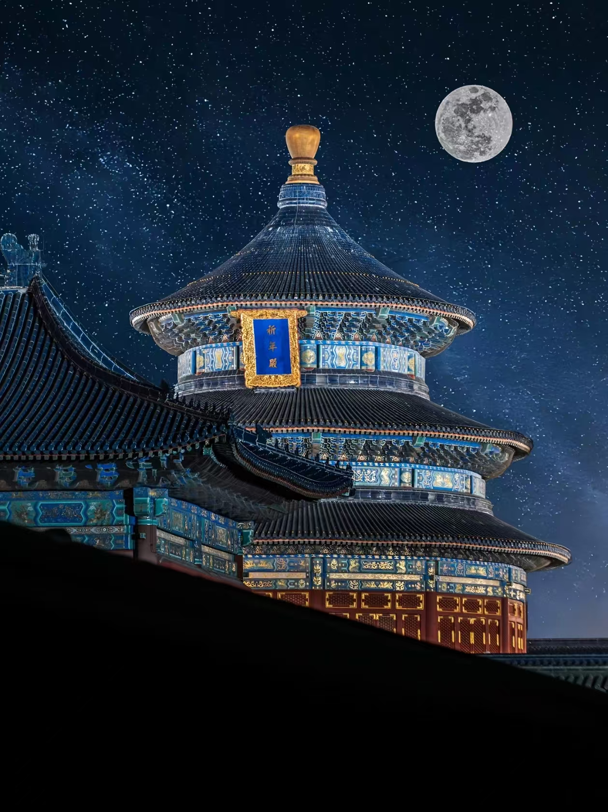
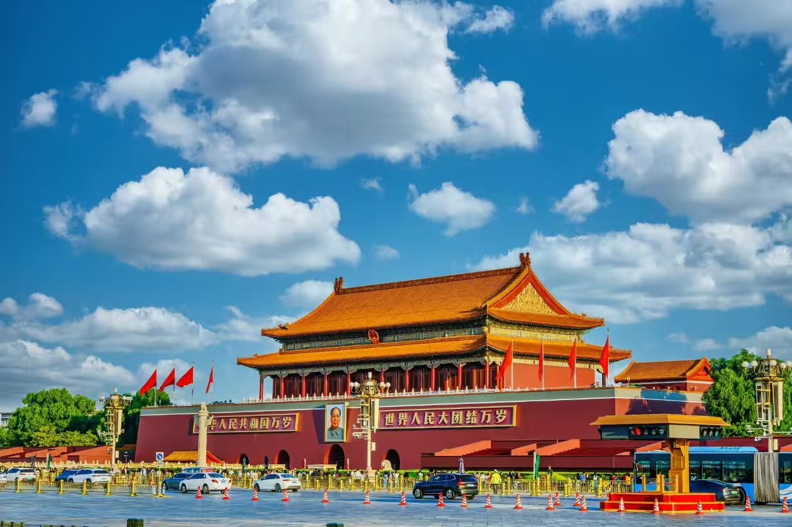
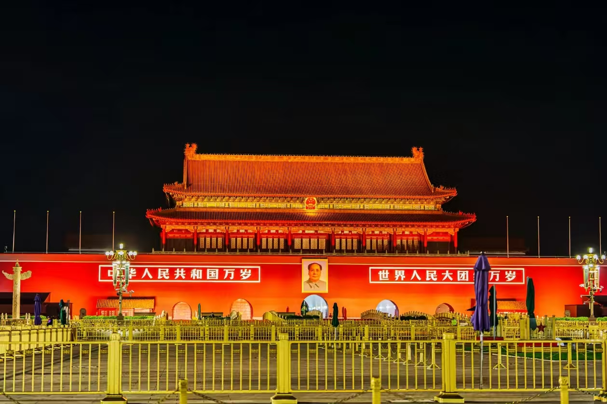

Beijing Travel Guide: What to See, Eat and Do in 2026
Beijing is one of those cities that takes you completely by surprise. You expect history — and you get it, in overwhelming quantities — but what catches most visitors off guard is how alive the city feels. Ancient hutong alleys sit next to gleaming subway stations. Street food vendors set up beside Michelin-starred restaurants. It's a city that refuses to be just one thing. Blending thousands of years of imperial legacy with hyper-modern urban efficiency, Beijing functions entirely on a real-name verification network. To ensure a seamless trip, this guide outlines everything from critical booking timelines to hidden transit hacks and culinary landmarks.
1. Essential Logistics: Pre-Trip Planning & Setup
Real-Name Identification: Your physical identification document—a national identity card for domestic citizens or an original valid passport for international visitors—is the ultimate pass to navigating Beijing. Every single landmark, commercial hotel, transit terminal, and security checkpoint relies stringently on real-name verification. Without your physical ID on hand, moving through the city becomes impossible. If applicable, pack official senior citizen, student, or military credentials, as most state-run heritage parks offer steep 50% discount tiers or free admission. Keeping high-resolution digital copies of your documents on your phone is highly recommended as a safety backup.
Digital Eco-System Setup: Before setting out, install and configure a few vital applications on your smartphone. First, prioritize **YiTongXing (亿通行)**, the definitive transit app that generates uniform QR codes for immediate entry across all municipal subways and bus lines, eliminating the need for physical tickets. Complement this with **Amap (高德地图)** or **Baidu Maps** for precise street navigation and lane-level walking directions. Ensure your **WeChat Pay** or **Alipay** wallets are active and linked to functional bank cards. Beijing operates virtually cashless; keeping just a nominal amount of paper currency (around 50 to 100 RMB in small bills) is more than sufficient for emergency edge cases.
Wardrobe Dynamics and Day Pack Essentials: Navigating Beijing's monumental attractions demands extensive walking over stone plazas and paved trails, making a highly cushioned, broken-in pair of athletic walking shoes mandatory. Dress responsively according to the seasonal climate. Beijing features stark diurnal temperature variations; spring and autumn offer crisp, comfortable days but chilly nights requiring light jackets. Summer brings intense UV radiation and heavy downpours—pack high-protection sunscreen, wide-brimmed hats, and durable umbrellas. Winter brings dry, piercing cold, demanding heavy down coats, thermal underwear, scarves, and gloves. Always pack a portable power bank to counter rapid phone battery drainage from navigation and ticket scanning. Carry a reusable water bottle, as free filtered drinking water fountains are standard across metro terminals and major heritage centers.
Always map out your general daily routes geographically beforehand. Grouping nearby historic neighborhoods together minimizes commuting times and prevents frustrating back-and-forth travel across the capital's vast multi-ring layout.
2. Core Survival Guidelines: Avoiding Scams & Delays
The Booking Iron Rule: Virtually all world-renowned historic sites in Beijing require real-name ticket reservations secured online well in advance. Daily caps are strictly enforced, and manual ticket windows do not sell same-day tickets if allocations are exhausted. Do not arrive at an entrance expecting to buy a ticket on the spot. Furthermore, note that the Forbidden City, the National Museum, the Chairman Mao Memorial Hall, and almost all major public museums are **permanently closed on Mondays**. Designate Mondays for open-air parks or shopping streets to avoid a wasted trip.
Bypassing Ticket Scams: Aggressive ticket scalpers and unauthorized private tour touts frequently operate around busy transport hubs or outside the perimeters of Tiananmen Square and the Great Wall. They often promise "guaranteed immediate entry," "exclusive internal ticket pools," or "shortcut routes bypassing queues." These claims are fraudulent schemes designed to charge inflated fees or leave you stranded outside. Rely strictly on verified municipal booking portals and official mini-programs.
Navigating Strict Security Regimes: Security perimeters enveloping Tiananmen Square, the Forbidden City, and the Chairman Mao Memorial Hall rival international airport protocols. Pocket lighters, pocket knives, matches, flammable materials, and large-format pressurized aerosol sprays are strictly prohibited and will be confiscated. Travel light with minimal baggage to clear these checkpoints quickly, and keep a close eye on your personal belongings in dense crowds.
3. Heritage Masterclass: Attraction Booking Protocols
Open-air public lifestyle districts—such as the historic Nanluoguxiang, Yandai Xie Street, and the scenic lakesides of Shichahai—require absolutely no ticketing or advanced registration. However, the city's crown jewels require strict adherence to the following official booking parameters:


- The Forbidden City (The Palace Museum): The most competitive ticket in the country. Reservations open exactly **7 days in advance at 8:00 PM (20:00) sharp** via the official "Palace Museum" WeChat mini-program or platform. Tickets are split into morning and afternoon entry windows. Securing a morning slot is highly recommended to enjoy lighter crowds and better photography lighting. Tickets cost 60 RMB during peak season. Closed Mondays.
- Tiananmen Square & Flag Raising Ceremony: Entry to the square is completely free, but registering a reservation is mandatory. Bookings can be made 1 to 7 days prior via the "Tiananmen Square Reservation" portal. If you plan to watch the iconic dawn flag-raising ceremony, ensure you select the specific "Sunrise/Flag Raising" time slot and arrive at least 60 minutes early to secure a viewing spot amid massive crowds.
- Chairman Mao Memorial Hall: Free admission. Bookings open 1 to 6 days in advance at **12:30 PM (12:30)** daily via its specialized booking portal. The hall operates exclusively during morning hours and remains closed every Monday. Maintain solemn silence and strict decorum inside.
- National Museum of China: Free admission. Reservations open 1 to 7 days in advance at **5:00 PM (17:00)** daily via its official app or mini-program. Closed Mondays. The museum's vast galleries house priceless cultural relics; budget at least a half-day to do it justice.
- The Great Wall (Badaling & Alternative Sections): Badaling offers the longest booking horizon, opening slots up to **15 days in advance at 8:00 AM** daily. While Badaling is heavily restored and highly famous, it gets incredibly crowded on weekends and holidays. For a more relaxed experience, consider **Mutianyu**, which is well-restored, far less congested, and features accessible cable cars. For avid hikers, the rugged, unrestored towers of **Jinshanling** or **Jiankou** provide dramatic, crumbling vistas but require dedicated transport planning. Start your journey early in the morning to beat the tour buses.
- The Summer Palace, Temple of Heaven, & Prince Gong's Mansion: These expansive classical landmarks are more accessible, with ticket lines opening 3 to 5 days in advance on their respective official platforms. Arrive during early morning hours to watch local residents practice Tai Chi, play cards, or fly kites.
4. Culinary Footprint: The Capital's Flavors
1. Imperial Classics & Sit-Down Dining
Authentic Peking Duck: This legendary roast duck dish features exceptionally crispy skin dipped lightly in white sugar, followed by tender meat wrapped in thin flour pancakes alongside julienned scallions, crisp cucumbers, and savory sweet bean sauce. Avoid flash-in-the-pan tourist traps near major entrances. Instead, choose revered institutions like **Siji Minfu (四季民福)** for its reliable, crispy texture and great value, or **Bianyifang (便宜坊)** for its traditional closed-oven roasting technique that retains succulent juices. After the main carving, the remaining duck carcass can be prepared as a rich, milky soup or seasoned with salt-and-pepper spices.
Copper-Pot Mutton Shabu-Shabu: An authentic winter favorite featuring a clear, unseasoned water broth boiling inside a traditional coal-fired copper chimney pot. This clean broth highlights the quality of thin, hand-cut slices of fresh mutton dipped in a rich savory sesame paste sauce, accompanied by sweet pickled garlic. Highly vetted choices include **Nanmen Shuanrou (南门涮肉)** or the historic **Jubaoyuan (聚宝源)** located in the heart of the Niujie district.
2. Traditional Street Eats & Local Snacks
For an authentic daily bite, try **Zhajiangmian**, thick wheat noodles tossed with varied crisp vegetable garnishes and a rich, savory fried ground pork sauce (top spots include *Fangzhuanchang No. 69* and *Haiwanju*). Adventurous foodies can seek out **Luzhu Huoshao**, a bold, robust stew of simmered pork intestines, lungs, and firm tofu over baked flatbread seasoned with garlic purée and chili oil (visit *Menkuang Hutong* or *Xiaochangchen*). To satisfy a sweet tooth, try **Wandouhuang** (refined, chilled sweet pea flour cake), **Lvdagun** (glutinous rice rolls dusted in roasted bean powder), or **Miancha** (seasoned millet mush enjoyed without utensils by sipping directly from the bowl's rim). These traditional desserts are easily sampled at *Huguosi Snacks* or *Jinfang Snacks* centers.


3. Targeted Gourmet Neighborhoods
Avoid the commercialized Wangfujing Snack Street, which functions as an overpriced tourist hub. For an authentic experience, navigate **Niujie**, the historic center for authentic Halal dining, fresh mutton cutting, and sticky rice cakes. Explore **Huguosi Street** to browse a dense concentration of heritage snack counters, or stop by **Qianmen and Xianyukou** for reliable sit-down dining options near the central axis. Trendy neighborhoods like **Nanluoguxiang and Yandai Xiejie** combine historic courtyard architecture with creative modern street food stalls, making them perfect for casual exploring and photography.
5. Transit Infrastructures: Mastering the Commute
The Subway First Mandate: The municipal subway network is your fastest and most reliable option for navigating Beijing. It operates entirely immune to the city's notorious surface traffic delays and connects seamlessly with almost every major historical site. Fares are distance-metered, ranging affordably from 3 to 7 RMB per journey (with specialized airport express links flat-rated at 25 RMB). Use your smartphone to scan through the turnstiles via the **YiTongXing** app or compatible digital wallets.
Surface Bus Systems: Standard city buses cost a flat rate of 1 to 2 RMB per trip. A vital operational rule: you must tap or scan your transit app **both upon boarding the front door and immediately prior to stepping off the rear door**. Forgetting the exit scan causes the system to penalize your account with maximum route fare deductions.
Rush Hour Survival Tactics: On standard working days, the morning peak (**07:30 to 09:00**) and evening rush (**17:00 to 19:00**) bring heavy congestion to the city's subways. Unless you have a tight booking deadline, try to plan your travel outside these busy windows. Major multi-line interchange hubs often feature long walking transfers between platforms, so factor in extra connection time. To visit the Badaling Great Wall safely, avoid unlicensed private drivers soliciting rides on the street. Instead, take the official **Suburban Railway S2 Line** trains or use authorized tourist express shuttle buses departing from central transit squares.
6. Strategic Lodging Guide: Optimal Neighborhoods
The golden rule for accommodation in Beijing is to choose a property situated within a short walking distance of a metro station entrance. This simple step saves hours of daily foot travel and ensures easy transfers across the city. The primary hospitality zones are categorized below:
Qianmen / Dashilan Area
The premier choice for first-time visitors. This central district is located just south of Tiananmen Square and the Forbidden City, placing major landmarks within easy walking distance or a short, direct ride away. The historic neighborhood features bustling pedestrian streets and a wide range of accommodation choices, from budget-friendly international brands to unique boutique properties.
Dongsi / Nanluoguxiang Area
Ideal for travelers seeking an authentic local atmosphere. This historic neighborhood is famous for its preserved courtyard architecture and quiet residential lanes. The surrounding side streets are filled with independent coffee houses, boutique shops, and local eateries. It offers excellent metro connectivity to the city center, with accommodations centered around stylish, converted courtyard guesthouses.
Xizhimen Hub Area
A major transportation gateway in the northwestern part of the city. As a key multi-line metro junction and railway terminal, it offers fast, direct transit links to all major attractions and outer scenic areas. The neighborhood features a high concentration of dependable domestic business hotels that offer great value and practical convenience for budget-conscious travelers.
Guomao / Sanlitun Area
The city's premier commercial and financial center. The skyline is defined by modern skyscrapers, luxury shopping malls, upscale dining, and a lively nightlife scene. Accommodations here consist mainly of premium international luxury hotels with higher rates. Because it sits further east from the core historic sites, it is best suited for business travelers or visitors prioritizing shopping and evening entertainment.
Navigating Beijing successfully depends on proactive preparation: always carry your physical passport or ID card, register for core historic sites exactly 7 days in advance online, select a hotel room positioned near a metro platform, and use digital transit apps to travel efficiently. With your logistics sorted in advance, you can fully immerse yourself in the incredible historic scale of the capital!